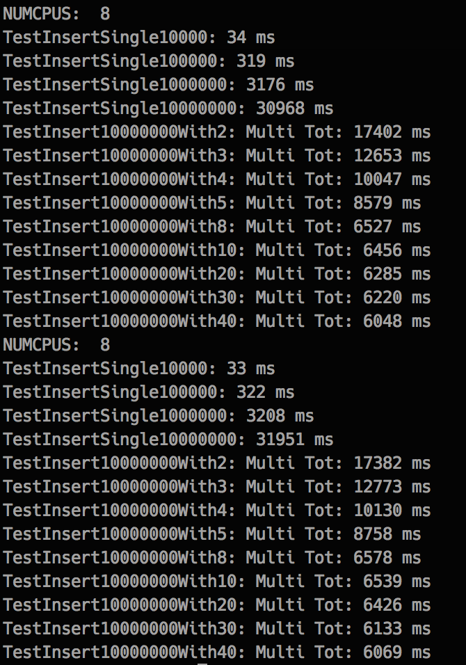
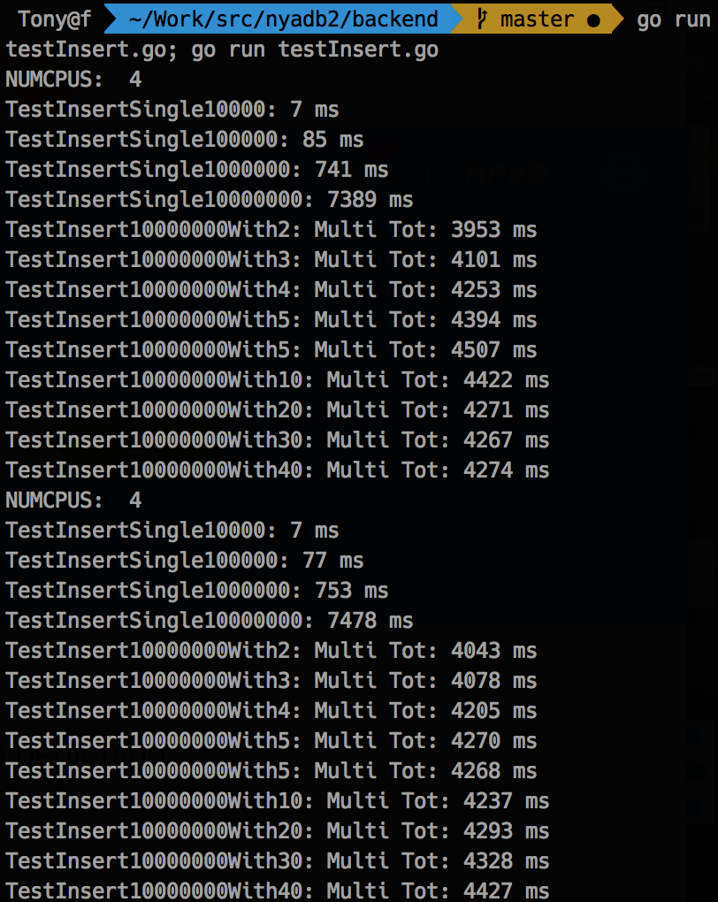
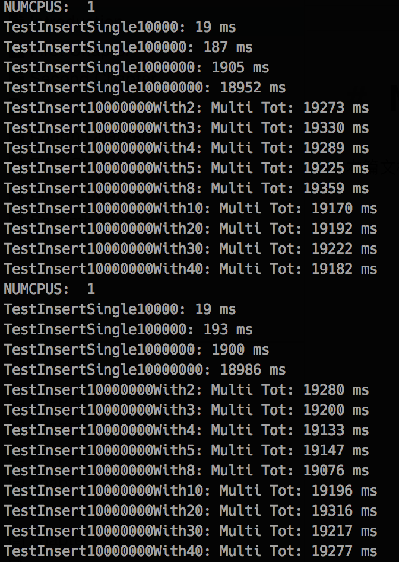

NYADB的表现和机器的核心数相关, 下面是分别在核心数为8, 4, 1的机器上的表现.
其中TestInsertSingleXXX表示以单线程执行XXX次insert操作的耗时.
TestInsertXXXWithYYY表示以YYY个线程并发执行XXX次insert操作的耗时.
机器1:
cpu MHz : 2397.115
cache size : 20480 KB
cpu cores : 8

机器2:
cpu : 2.7 GHz Intel Core i5
physical cpu cores : 2
logical cpu cores : 4

机器3:
cpu MHz : 2600.066
cache size : 20480 KB
cpu cores : 1
